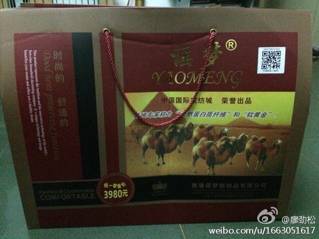

也不全是孩子没时间陪的缘故，这些老人在信息时代落伍了，加上年龄带来的固执和僵化，被骗几乎是必然的结果。解决办法，要么就是别心疼钱，能哄老人开心就成，要么就是别让老人手里有太多闲钱。//@廖劲松:如果没时间陪老人，那么电信诈骗、卖理财产品的、卖保健品的……就会花很多时间陪他们。@慢跑者-廖劲松:#互联网思维# 小区周围开了个老年理疗室，每天让老人免费使用理疗仪器，尽管我天天提醒，免费后面是高昂的付费，呵呵，今天父母还是心花怒放的花2980元买下了价值10500元的虫草口服液，并赠送一套价值3980元的驼绒被......天天网上互联网思维的大侠们，比起做传统生意的，可差远了 